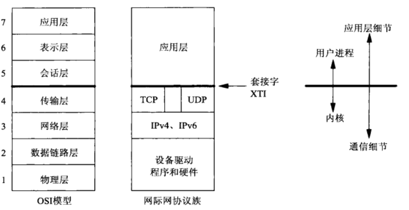
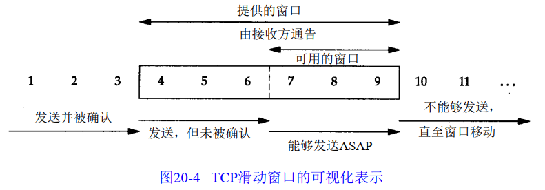

OSI模型：

- 7层模型详解：
- 底下两层是设备驱动程序和网络硬件，不必关心
- 网络层由IPv4和IPv6两个协议处理
- 传输层有TCP(传输控制协议)和UDP(用户数据报协议)，中间留有间隙，说明网络应用可以绕过传输层直接使用IPv4和IPv6
- 应用层：如telnet，FTP，email等
- 顶上三层构成用户进程，底下四层作为操作系统内核的一部分

注：
- UDP数据与TCP数据基本一致，唯一的不同是UDP传给IP的信息单元称作UDP数据报，且UDP的首部长为8字节
- 以太网：当今TCP/IP采用的主要的局域网技术
数据链路层：
- 在TCP/IP协议族中，链路层的目的有三个：
- 为IP模块发送和接收IP数据报
- 为ARP（地址解析协议）模块发送ARP请求和接收ARP应答
- 为RARP（逆地址解析协议）发送RARP请求和接收RARP应答
- 环回接口（图2-4）：
- A类网络号127就是为环回接口预留的，大多数系统会把IP地址127.0.0.1分配个这个接口,并命名为localhost
- 目的端口为环回地址时，(大部分实现)完成传输层和网路层的所有过程，当IP数据报离开网路层时把它返回给自己
- 最大传输单元MTU：
- 以太网和802.3对数据帧的长度都有一个限制，称为MTU
- 不同类型的网络大多数都有一个上限
- 如果IP层有一个比大于MTU的数据报要传，那么IP层就要进行分片，每一片都小于MTU
- 路径MTU：当在同一网络上的两台主机互相进行通信时，该网络的MTU非常重要，如果要通过多个网络，重要的不是两台主机所在网络的MTU值，而是两台通信主机路径中的最小MTU，被称作路径MTU
- ARP地址解析协议：为IP地址到对应的硬件地址之间提供动态映射，知道主机IP并不能让内核发送一帧数据给主机，内核必须知道目的端的硬件地址才能发送数据
- RARP：对于ARP，RARP请求以广播方式发送，而RARP应答一般是单播传送的

注：
- 这个图并没有完全看懂
ICMP：Internet控制报文协议：

网络层：IP协议

IP协议：
- 特点：
- 不可靠：不能保证IP数据报能成功到达目的地，仅提供传输服务
- 无连接：IP并不维护任何关于后续数据报的状态信息。每个数据报的处理是相互独立的，这也说明IP数据报可以不按发送顺序接收；比如发送连续的A和B，每个数据报都是独立的进行路由选择，可能选择不同的路线，因此B可能在A到达之前先到达
- IPv4和IPv6都定义了最小重组缓冲区大小，是任何实现都必须保证支持的最小数据报大小，对IPv4是576字节，IPv6是1500字节
- 字段：
- 首部长度：指首部4字节的个数，占4位，最大为：二进制的1111=十进制的15，4*15最多为60个字节
- 总长度字段：整个IP数据报的长度，以字节为单位，利用首部长度字段和总长度字段就可以知道IP数据报中数据内容的其实位置和长度，该字段长16bit，所以IP数据报最长65535字节。尽管可以传送一个长达65535字节的IP数据报，但大多数链路层都会对它进行分片，而且主机要求不能接收超过576字节的数据报。由于TCP把数据分成若干份，因此这个选项一般不会影响TCP
- 标识字段唯一标识主机发送的每一份数据报，通常每发送一份报文它的值就加1
- TTL(time-to-live)：
- 8bit，最大为255，生存时间字段设置了数据报可以经过的最多路由器数。
- 它指定了数据报的生存时间。每经过一个路由器就减1，当该字段值为0时数据报就丢弃。TTL的初值由源主机设置，通常为32或者64；
- TTL字段的目的是防止数据报在选路时无休止的在网络中流动
- 8位协议字段指出是哪个协议向IP传送数据
- 首部检验和字段是根据IP首部计算的检验和码，他不对首部后面的数据进行计算
- 每一份IP数据报中都包含源IP和目标IP地址
- IP分片：物理网络层一般要限制每次发送数据帧的最大长度。
- 如果要进行分片，可以发生在主机上，也可以发生在路由器上
- 把一份IP数据报分片以后，只有到达目的地才进行重新组装，重组由目的端的IP层来完成，目的是使分片和重组过程对运输层透明
- 缺点：即使只丢失一片数据也要重传整个数据报
- UDP容易导致IP分片，TCP试图避免分片
- 网络地址分类：
- A类地址的首字节范围：0~127
- B类地址的首字节范围：128~191
- C类地址的首字节范围：192~223

- 注意：
- 忽略的一个问题：什么是大端序？高位存储低字节，传输的时候先低位，如4字节32bit按0~7bit，其次8~15bit的顺序传输。又称网络字节序。
关于分片的几个问题：
- 为什么要分片：
- 发送方是怎么确定分片大小的：一般来说，发送方是依据自身的MTU来决定分片大小的
- 接收方又是靠什么重组分片的
- TCP如何避免被发送方分片的？TCP可以避免被发送方分片是因为它主动把数据分成小段再交给网络层。最大的分段大小为MSS，它相当于MTU-IP头-TCP头的大小，所以一个MSS恰好能装进一个MTU中
- TCP是怎样适配接收方的MTU的？通过三次握手
- 发包的大小是由MTU较小的一方决定的
TCP传输控制协议：
- TCP是一个面向连接的协议，为用户进程提供可靠的全双工字节流。TCP是一种流套接字。TCP关心确认，超时，重传等。
- TCP通过给其中每个字节关联一个序列号对所发送的数据进行排序，如果分节非顺序到达，会按序列号重新排序
- TCP提供流量控制，TCP总是告知对端在任何时刻它一次能从对端接收多少个字节的数据，称为通告窗口。该窗口指出接收缓冲区中当前可用的空间量，从而确保发送端发送的数据不会使接收缓冲区溢出
- TCP是全双工的，在一个给定的连接上在任意时刻在两个方向上既可以发送数据又可以接收数据
TCP通过以下方式来提供可靠性：
- 应用数据被分割成TCP认为最合适发送的数据块。由TCP传递给IP的信息单位称为报文或段
- 当TCP发出一个段后，启动一个定时器，等待目的段确认收到这个报文段，如果不能及收到将重发这个报文段
- 另一端收到数据进行确认，这个确认不是立即发送，通常会推迟几分之一秒
- TCP将保持首部和数据的校验和，这是一个端到端的校验和，目的是检测数据在传输过程中的任何变化，如果收到的校验和有差错，TCP将丢弃这个报文段和不确认收到此报文段（希望发端超时并重发）
- IP数据报的到达可能会失序，因此TCP报文段的到达可能会失序，如有必要TCP将对收到的数据进行重新排序，将收到的数据以正确的顺序交给应用层
- 丢弃重复数据
- TCP提供流量控制，TCP连接的每一方都有固定大小的缓冲空间，接收端只允许另一端发送接收端缓冲区所能接纳的数据

TCP首部细解：
- 端口号：每个TCP都包含源端口和目的端口，这两个值加上IP首部的源端IP和目的端IP唯一确定一个TCP连接
- 序号：用来标识从TCP发端到TCP收端发送的数据字节流，它表示在这个报文段中的第一个数据字节的序号，TCP用序号对每个字节计数，序号到达2的32次方后从0重新开始。当一个新连接建立时SYN标志为1，SYN标志消耗一个序号
- 确认序号：包含发送确认的一端所期望收到的下一个序号，因此确认序号应当是上次成功收到数据字节序号加1，只有ACK为1时确认序号字段有效
- TCP为应用提供全双工服务，连接的每一端必须保持每个方向上的传输数据序号
- 首部长度给出首部中四字节的数目，占4bit，因此TCP最多有60字节的首部
- TCP首部的6个标志比特，他们中的多个可同时被设置为1
- URG：紧急指针有效
- ACK：确认序号有效
- PSH：发送方使用该标志通知接收方将所收到的数据全部提交给应用层，这里的数据包括与PUSH一起传送的数据以及接收方TCP已经为接收进程收到的其他数据
- RST：重建连接，是用来复位的，产生复位的原因：
- 一个常见情况是当连接请求到达时，目的端口没有进程在监听
- 异常终止一个连接，会发送一个RST而不是FIN，套接字通过选项SO_LINGER提供这种异常关闭的能力。异常终止一个连接对应用程序有两种好处：
- 丢弃任何待发送数据并立即发送复位报文段
- RST接收方会区分另一端执行的是正常关闭还是异常关闭。应用程序使用的API必须提供产生异常关闭而不是正常关闭的手段
- RST报文段不会导致另一端产生任何响应，另一端根本不进行确认。收到RST的一方将终止该连接，并通知应用层连接复位
- SYN：同步序号，用来发起一个连接
- FIN：发送端完成发送任务——应该是关闭连接
- 16位窗口大小：TCP的流量控制由连接的每一端通过声明的窗口大小来提供，窗口大小为字节数，起始于确认序号字段指明的值，16bit，因此窗口大小最大为65535
- 校验和：覆盖了整个TCP报文段：TCP首部和TCP数据，由发端计算和存储，收端进行验证
- 选项：最常见的可选字段是最长报文大小MSS（Maximum Segment Size），每个连接方通常在通信的第一个报文段（有SYN）指明这个选项，它指明本端所能接收的最大长度的报文段——指定MSS是为了避免分片？和滑动窗口大小有什么关系？
建立连接：这一过程中由客户端执行connect来触发，当一端为建立连接而发送SYN时必须选择一个初始号，ISN随时间的变化，因此每个连接有不同的ISN
- Client将标志位SYN置为1（表示要发起一个连接），并发送初始序号seq=J，并将该数据包发送给Server，Client进入SYN_SEND状态
- Server发回包含Server的初始序号的SYN，将确认序号设为ack=J+1以对客户SYN报文段进行确认，一个SYN占用一个序号，将标志位SYN和ACK都置为1，Server进入SYN_RCVD状态。只有当SYN_RCVD状态是从LISTEN状态进入，而不是从SYN_SEND状态进入时，从SYN_RCVD回到LISTEN的状态变迁是有效的。
- 客户必须将确认序号设置为服务器ISN加1对服务器SYN报文段进行确认：检查ack是否为J+1，ACK是否为1，如果正确则将标志位ACK置为1，ack=K+1，并将该数据包发送给Server，Server检查ack是否为K+1，ACK是否为1，如果正确则连接建立成功，Client和Server进入ESTABLISHED状态，完成三次握手。
终止连接：
- 原则：
- 这一过程由客户端或服务端任一方执行关闭来触发。
- 由于TCP连接时全双工的，因此，每个方向都必须要单独进行关闭，这一原则是当一方完成数据发送任务后，发送一个FIN来终止这一方向的连接，收到一个FIN只是意味着这一方向上没有数据流动了，即不会再收到数据了，但是在这个TCP连接上仍然能够发送数据，直到这一方向也发送了FIN。首先进行关闭的一方将执行主动关闭，而另一方则执行被动关闭
- 过程：
- Client发送一个FIN，用来关闭Client到Server的数据传送，Client进入FIN_WAIT_1状态。
- 收到FIN的一端执行被动关闭，这个FIN由TCP确认，它的接收也作为一个文件结束符传递给server，server发送一个ACK给Client，确认序号为收到序号+1（与SYN相同，一个FIN占用一个序号），server进入CLOSE_WAIT状态，client收到ack后进入FIN_WAIT_2状态；这也意味着client会永远保持这个状态，另一端也处于CLOSE_WAIT状态（半关闭状态）
- Server发送一个FIN，用来关闭Server到Client的数据传送，Server进入LAST_ACK状态。
- Client收到FIN后，Client进入TIME_WAIT状态，接着发送一个ACK给Server，确认序号为收到序号+1，Server进入CLOSED状态，完成四次挥手
- 半关闭：在四次挥手的2，3之间，从执行被动关闭一端到执行主动关闭一端流动数据是有可能的，称为半关闭
- shutdown而不是close，且第二个参数值为1
- TIME_WAIT（2MSL等待状态）：每个具体TCP的实现必须选择一个报文段最大生存时间MSL，它是任何报文段被丢弃前在网络内的最长时间
- 状态存在的两个理由：
- 可靠的实现TCP全双工连接的终止
- 允许老的重复分节在网络中消逝
- 对一个具体实现所给定的处理原则：当TCP执行一个主动关闭，并发回最后一个ACK，该连接必须在TIME_WAIT状态停留的时间为2倍的MSL，这样可以让TCP再次发送最后的ACK以防丢失
- FIN_WAIT_2状态：
- 只有当另一端发送一个FIN关闭另一方的连接，才会从FIN_WAIT_2进入TIME_WAIT状态
- 所以有可能一端保持FIN_WAIT_2，另一端保持CLOSE_WAIT状态，并一直保持这个状态直到应用层决定进行关闭
- 最大报文长度MSS：表示TCP往对端的每个分节中能发送的最大块数据的长度，避免分段
- 当一个连接建立时双方都要通告各自的MSS
- MSS只能出现在SYN报文中，如果一方不接受来自另一方的MSS，则MSS就定为默认值536（允许20字节的IP首部和20字节的TCP首部以适合576字节IP数据报）
- 一般来说如果没有分段发生，MSS还是越大越好，报文段越大允许每个报文段传送的数据越多，相对IP和TCP首部有更高的网络利用率。对于以太网，MSS值可达1460字节。当TCP发送一个SYN时，能将MSS值设置为外出接口上的MTU长度减去固定的IP和TCP首部长度
- 报文复位段：
呼入连接请求队列：
- 正在等待请求的一端有一个固定长度的连接队列，该队列中的连接已经被TCP接受（三次握手完成）但还没被应用层接收；注意区分TCP接受一个连接是将其放入这个队列，而应用层接受连接是将这个连接从该队列中移除
- 应用层将指明这个队列的最大长度，这个值通常称为积压值，取值范围：[0,5]
- 对于新的连接请求，连接队列中已经没有空间，TCP将不理会收到的SYN，也不发回任何报文段，由于不应答SYN，服务端迫使客户TCP随后重传SYN以等待连接队列有空间接受新的连接，如果以复位响应客户端，客户进程的主动打开将被废弃
交互数据流：
- 经受时延的确认：TCP在收到数据时并不立即发送ACK，相反推迟发送以便将ACK与需要沿该方向上发送的数据一起发送。大多数实现采用200ms的时延——具体是怎么个处理方法？
- Nagel算法：能不能设计一个缓冲机制，把一个往返时间里生成的小数据收集起来合并成一个大包？Nagel算法实现了这个功能
- 原理：在发送出去的数据还没有被确认前假如又有小数据生成，那就把小数据收集起来凑满一个MSS或者等到确认后再发送
- 该算法要求一个TCP连接上最多只能有一个未被确认的未完成的小分组，在该分组的确认到达之前不能发送其他的小分组，相反TCP收集这些少量的分组，并在确认到来时以一个分组的方式发送出去
- 使用TCP套接字选项TCP_NODELAY可以关闭套接字选项;
- Nagel并没有直接提高性能，启用它只是提高传输效率，减轻网络负担，为了尽可能的利用网络带宽，TCP总是希望尽可能的发送足够大的数据。Nagle算法就是为了尽可能发送大块数据，避免网络中充斥着许多小数据块。
- 该算法的优越处在于它是自适应的：确认到达的越快，数据就发送的越快
- 在局域网下很少使用这个算法，因为局域网的传输速度足够快
端口号：16位整数的端口号
- 客户端通常使用短期存活的临时端口，这些端口通常由传输层协议自动赋予客户，客户端通常不关心临时端口的具体值
- 端口号通常被分为以下三段：
- 0-1023：由IANA分配和控制，
- 1024-49151：不受IANA控制
- 49152-65535：动态或私用端口，就是所谓的临时端口
TCP输出：每个tcp套接字有一个发送缓冲区，可以使用SO_SNDBUF套接字选项来更改该缓冲区的大小
- 调用write时，内核从该应用进程的缓冲区中复制数据到所写套接字的发送缓冲区，如果该套接字的发送缓冲区容不下该应用进程的所有数据，内核将不会从write返回，直到应用进程的所有数据都复制到套接字发送缓冲区。所以从一个tcp套接字的write调用返回成功仅仅表示我们可以重新使用原来的应用缓冲区，并不表明对端的TCP或应用进程已接收到数据
- 伴随来自对端ACK的不断到达，本端TCP至此才能从套接字发送缓冲区中丢失已确认的数据。TCP必须为发送的数据保留一个副本，直到它被对端确认为止
- 本端以MSS大小的或更小的块把数据报传递给IP，同时给每个数据块安上一个TCP首部以构成TCP分节，其中MSS或是由对端通告的值，或是536(若对端未发送一个MSS选项)，IP给每个TCP分节安上一个IP首部以构成IP数据报，并按照其IP地址查找路由表项以确定外出接口，然后把数据报传递给相应的数据链路
TCP的成块数据流

- TCP滑动窗口协议：该协议允许发送方在停止并等待确认前可以连续发送多个分组。由于发送方不必每发一个分组就停下来等待确认，因此该协议可以加速数据的传输
- 接收方不必确认每一个收到的分组，ACK是累积的，表示接收方已经正确收到了一直到确认序号减1的所有字节
- 三个术语描述窗口左右边沿的移动：
- 窗口合拢：左边沿向右边沿靠近，这种现象发生在数据被发送和确认时；
- 窗口张开：右边沿向右移动，这种现象发生在另一端读取已经确认的数据并释放了TCP的接收缓存时。
- 窗口收缩：右边沿向左移动，强烈建议不要使用这种方式
- 特点：
- 窗口是由接收方给定的
- 窗口更新：发送ACK的数据报可以是不用确认任何数据的，只是用来增加窗口的右边沿
- 发送方不必发送一个全窗口大小的数据
- 来自接收方的一个报文段确认数据并把窗口向右边滑动，这是因为窗口大小是相对于确认序号的（啥意思）
- 窗口的大小会减小，但窗口的右边沿却不能向左移动
- 接收方在发送一个ACK前不必等待窗口被填满
- 拥塞窗口：
- 在局域网中发送方一开始就向网络发送多个报文段直到达到接收方通告的窗口大小为止是可行的，但在中间有多个路由的情况下是不可行的，TCP需要支持一种慢启动的算法，该算法通过观察到新分组进入网络的速率应该与另一方返回确认的速率相同而进行工作。
- 慢启动为发送方的TCP增加了一个窗口：拥塞窗口
- 发送方取拥塞窗口与通告窗口的最小值作为发送上限
- 拥塞窗口是发送方使用的流量控制，通告窗口是接收方使用的流量控制
- 拥塞窗口如何维护：
- 当与另一个主机建立TCP连接时拥塞窗口被初始化为1，每收到一个ACK，拥塞窗口就增加一个报文段(指数增加的关系)
- 发送方把拥塞窗口的值设置的很小，RFC建议是2个，3个或者4个MSS，具体视MSS的大小而定
- 如果发出去的包都得到确认，表明还没有达到拥塞点，可以增加拥塞窗口
- 慢启动持续一段时间后，拥塞窗口达到一个较大的值
- 拥塞之后会发生什么？
- 发出去的包得不到确认，如果收不到就只能重传，这个过程称为超时重传，从原始包到重传包的这段时间称为RTO
延迟确认：
- 原理：如果收到一个包后暂时没有什么数据要发送给对方，那就延迟一段时间再确认(windows上默认200ms)。加入这段时间内正好有数据要发送，确认信息和数据就可以在一个包里发出去了。
- 延迟确认并没有直接提高性能，只是减少了部分确认包，减轻了网络负担
TCP的超时与重传：TCP提供可靠的运输层，使用的方法之一就是确认从另一端收到的数据
- TCP通过在发送时设置一个定时器来解决。如果当定时器溢出时还没有得到确认就重传该数据
- 对每个连接，TCP管理四个不同的定时器
- 重传定时器使用于当希望收到另一端的确认
- 坚持定时器使窗口大小信息保持不断流动，即使另一端关闭了其接收窗口
- 保活定时器：可检测到一个空闲连接的另一端何时崩溃或重启
- 2MSL定时器：测量一个连接处于TIME_WAIT状态的时间
- 往返时间的测量：
- TCP超时重传中最重要的部分就是对一个给定连接的往返时间RTT的测量。由于路由器和网络流量会发生变化，因此这个时间会发生变化
- 拥塞避免算法
TCP的坚持定时器：TCP通过让接收方指明希望从发送方接收的数据字节数来进行流量控制。存在一种问题：当接收窗口为0时，接收方再次发送ACK打开关闭的窗口，但TCP不对ACK报文段进行确认，TCP只确认那些包含数据的ACK报文段，如果一个确认丢失了，则双方有可能因为等待对方而关闭连接：接收方等待接收数据，因为它已经向发送方通告了一个非0的窗口，而发送方在等待窗口更新。为防止这个死锁的发生，发送方使用一个坚持定时器来周期性的向接收方查询，以便发现窗口是否增大，这些从发送方发出的报文段称为窗口探查
- 当接收端通告窗口为0，从而使发送端停止发送任何数据，引起发送端设置其坚持定时器。如果定时器时间到发送端还没有收到窗口更新，就探查这个空窗口以决定窗口更新是否丢失
- 窗口探查包含一个字节的数据。TCP是允许关闭连接前发送一个字节的数据。所返回的窗口为0并不是确认该字节，因此这个字节被持续重传。
- 与超时重传的不同在于TCP从不放弃发送窗口探查，这些探查每隔60s发送一次，直到窗口被打开或连接终止。
- 糊涂窗口综合征：
TCP的保活定时器：保活功能主要是为服务器应用程序提供的，服务器应用程序希望知道客户主机是否崩溃，从而可以代表客户使用资源
- 服务器设置该选项后，如果一个给定的连接在两小时内没有任何动作，服务器就向客户发送一个探查报文段，客户处于以下4个状态：
- 客户端正常运行，TCP响应正常，
- 客户端已经崩溃，并且关闭或正在重启，这时客户TCP没有响应，75s超时，服务器总共发送10个这样的探查，间隔75s，如果没有收到响应就认为客户主机已经关闭并终止连接；差错是诸如连接超时之类的
- 客户主机崩溃并已经重启，这时服务器收到一个对其保活探查的响应，这个响应是一个复位，使得服务器终止这个连接
- 客户主机正常运行但是从服务器不可达，返回类似连接超时之类的
A类地址：0-127
B类地址：128-191
C类地址：192-223
未整理：
多线程服务端实现：
线程相比进程的优势：
- 上下文切换时不需要切换数据区和堆
- 可以利用数据区和堆交换数据
TCP和UDP的区别：
- TCP 是面向连接的，UDP 是面向无连接的：也就是说，在收发数据前，tcp必须和对方建立可靠的连接。
- UDP程序结构较简单
- TCP 是面向字节流的，UDP 是基于数据报的
- TCP 保证数据正确性，UDP 可能丢包
- TCP 保证数据顺序，UDP 不保证
域名及网络地址：
DNS：对IP和域名进行相互转换的系统,ping 域名 可以查看ip及连接状态
利用域名获取IP地址：#include<netdb.h>
struct hostent* gethostbyname(const char* hostname)通过传递字符串格式的域名成功时返回hostent结构体地址，失败时返回NULL指针
struct hostent{
char *h_name; // officical name,存有官方域名
char **h_aliases; // alias list，其他域名，同一个IP可以绑定多个域名
int h_addrtype: // host address type, 地址族信息，如果时IPv4，则此变量存有AF_INET
int h_length; // ip地址长度
}
利用IP地址获取域名：
struct hostent* gethostbyaddr(const char* addr, socklen_t len, int family)利用IP地址获取域相关信息，成功返回hostent结构体变量的地址，失败时返回NULL指针
创建进程的方法很多，只介绍创建多进程服务器端的fork函数#include<unistd.h>
pid_t fork(void):成功时返回进程ID，失败时返回-1
TCP滑动窗口；回退N协议；停等协议
套接字特性由3个属性确定，域、类型、协议
字节序函数：h代表主机字节序，n代表网络字节序，s是short，l是long
- unsigned short htons(unsigned short)：
- unsigned short ntohs(unsigned short)：